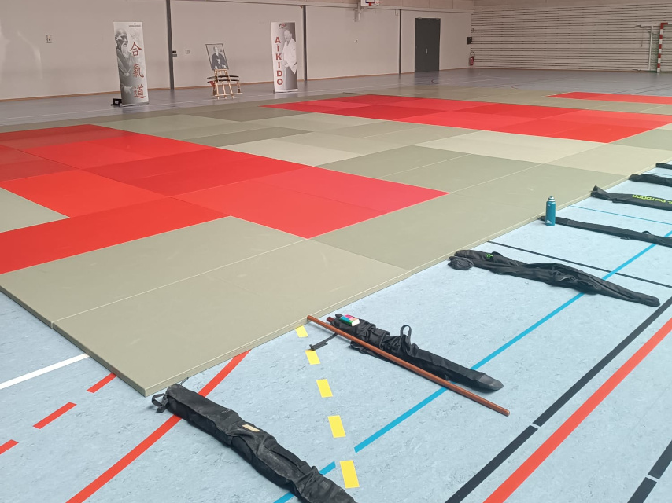

Stages
Approfondir sa pratique, au-delà des cours hebdomadaires.
En complément des cours du lundi et du mercredi, le club participe et organise ponctuellement des stages, seul ou avec d'autres clubs de la FAT.

Types de stages
Plusieurs formats, pour tous les niveaux.
Stages inter-clubs
Des rencontres avec d'autres dojos du Jura et de la FAT, l'occasion de pratiquer avec de nouveaux partenaires.
Stages armes
Des sessions dédiées au travail du bokken, du jō et du tantō, pour approfondir cet aspect de la pratique.
Préparation aux grades
Des stages ciblés pour préparer sereinement les passages de grade au sein de la fédération.
Stages à venir
Le calendrier des prochains stages.
Les dates de stages sont publiées régulièrement. Retrouvez le calendrier des stages nationaux de la Fédération d'Aïkido Traditionnelle sur le site de la FAT, pour les horaires, contactez-nous directement.
Prochaines dates à confirmer — contactez le club pour ses prochaines dates, ou consultez le site de la FAT pour le calendrier des stages nationaux à venir.
Stages passés
Quelques temps forts du club.
Le club a accueilli son premier stage inter-clubs sur le Plateau de Nozeroy, une belle occasion de partager la pratique avec d'autres dojos de la région.
FAQ
Questions fréquentes sur les stages.
Les stages sont-ils réservés aux pratiquants confirmés ?
Non, la plupart des stages sont ouverts à tous les niveaux. N'hésitez pas à demander conseil à vos enseignants avant de vous inscrire.
Faut-il être licencié pour participer à un stage ?
Oui, une licence FAT en cours de validité est généralement demandée pour participer aux stages, y compris ceux organisés par d'autres clubs.
Comment être informé des prochains stages ?
Les enseignants du club communiquent les dates directement sur le tatami ou vous référer au calendrier ci-dessus.
Rejoignez-nous
Envie de participer à un prochain stage ?
Contactez-nous pour connaître les dates et modalités d'inscription.